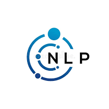
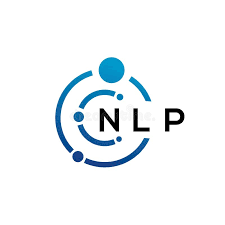

About
I'm Sai Kavya Sree Boddeti, a dedicated Data Scientist. I focus on creating real impact through data science by building machine learning models and scalable pipelines that improve decision-making and efficiency.
I’ve worked on projects that predict customer behavior, streamline healthcare processes, and deliver real-time analytics—solutions that didn’t just work in theory but actively solved real business problems.
I also make insights clear and actionable for teams with data storytelling and intuitive dashboards.
Education
Master of Science, Data Science
Stony Brook University (Aug 2023 - May 2025)
Bachelor of Technology, Computer Science and Business Systems
GITAM University (Jun 2019 - May 2023)

Skills
Programming & Data Manipulation: Python, SQL, R, data cleaning, feature engineering, and database management for analytics.

Machine Learning & AI: Deep learning, natural language processing, recommendation systems, model development.
 

Data Visualization & Reporting: Tableau, Power BI, matplotlib, seaborn, data storytelling, KPI dashboards, and reporting.


Statistical Analysis: Regression analysis, hypothesis testing, clustering, time-series analysis, A/B testing, statistical modeling.
Data Management: ETL pipelines, data wrangling, cloud-based data storage solutions, data integration, automation workflows.

Tools & Frameworks: TensorFlow, PyTorch, scikit-learn, AWS Sagemaker, Unix, Linux, shell scripting, Apache Spark.

Experience
Data Analyst
The Research Foundation for SUNY (Jan 2024 - Present)
- Utilized advanced SQL to systematically analyze cancer datasets from 20+ sources, uncovering actionable insights crucial for research.
- Designed and implemented a SQLAlchemy ORM database model to structure and manage over 50,000 NAACCR records.
- Engineered custom mappers to unify data received from partner universities, boosting downstream accuracy.
- Streamlined data workflows via Python and SQLAlchemy, reducing query time by 20% in Biomedical Informatics Lab.
Graduate Research Assistant
Stony Brook University (Aug 2024 - Present)
- Led biweekly meetings with 45 clinicians and researchers in the Biomedical Data Analytics Lab, using Tableau dashboards to present opioid overdose risk insights. Facilitated discussions to gather feedback on model performance and identify areas for improvement.
- Designed and implemented interactive Tableau dashboards that provided real-time, interpretable insights by integrating data pipelines built with Python (Pandas, NumPy) and SQL. These dashboards helped clinicians identify critical risk patterns and make timely intervention decisions.
- Automated data extraction, cleaning, and transformation processes using Python and SQL, ensuring accurate and up-to-date information was available for analysis and visualization. This streamlined workflow reduced manual reporting time by 30%.
Machine Learning Engineer
Phoenix Global (May 2022 - Jul 2022)
- Implemented a spam email classification model using NLP techniques, achieving 96% accuracy.
- Optimized model through hyperparameter tuning, feature selection, and advanced text preprocessing.
Projects
Dynamic Real-Time Analytics for Smart City IoT Infrastructure
Implemented a data pipeline with Apache Kafka, Apache Spark, and Amazon Redshift, optimizing data flow and processing for IoT-based traffic and weather data.
Customer Purchase Behavior Prediction
Analyzed historical customer purchase data and identified key features influencing buying patterns using Python and scikit-learn.
Personalized Recommendation System with NLP and Deep Learning
Designed a NLP-based recommendation system using TensorFlow, integrating pre-trained language models to analyze customer reviews, interactions, and feedback.